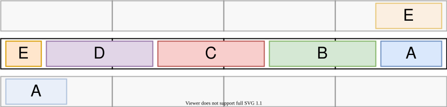
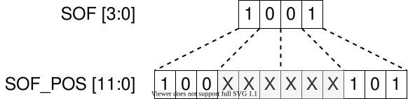
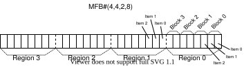
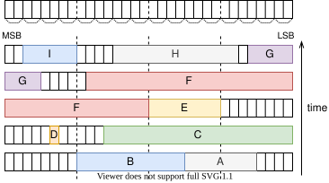
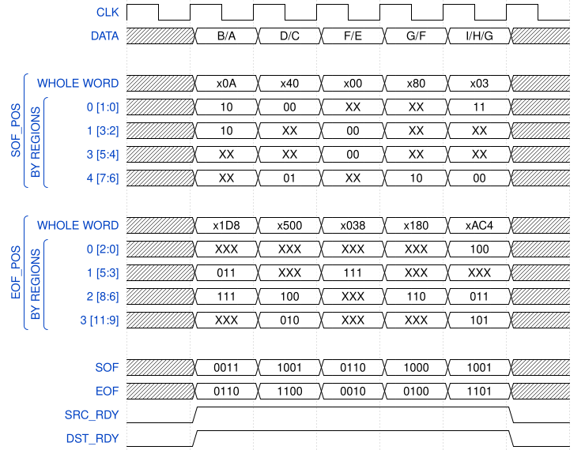
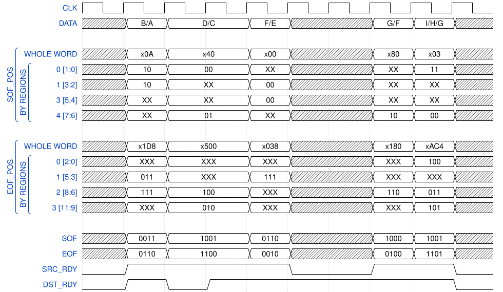

MFB specification¶
The Multi-Frame Bus (MFB) has been created on the basis of need to process multiple small frames in one clock cycle as well as frames of virtually any length. MFB features great versatility and is being used in the majority of our internal communication channels.
Operation¶
Transmitted data are organized into units called words. Each word is divided into regions where each region contains a specified number of blocks which are then composed of single items. Items are the smallest part of the word where frame edges can be recognized. The length of an item is specified by the number of bits it contains. Although the length of each part of the word can be set to possibly any value, the configuration of the bus is set according to its specific implementation. Not all configurations have to be supported though.
The placement of the begin/end parts of a frame has its limitations. Each region can contain no more than one ending and no more than one beginning of a frame. That means there can be either one whole frame or an end of one frame and a beginning of another frame, but the second frame can not end in this region. A frame’s beginning must be aligned to a block and frame’s ending must be aligned to any item. From these rules, it follows that the total number of whole frames, which can be transmitted in one clock cycle, is equal to the amount of regions. This is shown in figure “Four whole frames aligned in a single word”
{kind=link}
Four whole frames aligned in a single word¶
{kind=link}

Five frames aligned in a single word, not all are complete though¶
Figure “Five frames aligned in a single word, not all are complete though” shows that the total amount of frames being transmitted could be number of regions + 1 when considering frames that are incomplete.
The above restrictions allow both the overall design to remain sufficiently simple and the throughput of the bus to stay high enough.
Generic parameters¶
Name |
Type |
Example value |
Note |
|---|---|---|---|
REGIONS |
natural |
4 |
Amount of regions |
REGION_SIZE |
natural |
8 |
Amount of blocks inside every region |
BLOCK_SIZE |
natural |
8 |
Amount of items inside every block |
ITEM_WIDTH |
natural |
8 |
Amount of bits within each item |
MFB configuration specification is often provided in simplified form as MFB#(REGIONS, REGION_SIZE, BLOCK_SIZE, ITEM_WIDTH). From these parameters other internal constants are derived:
Name |
Type |
Calculation |
|---|---|---|
WORD_WIDTH |
natural |
REGIONS * REGION_SIZE * BLOCK_SIZE * ITEM_WIDTH |
SOF_POS_WIDTH |
natural |
REGIONS * log2(REGION_SIZE) |
EOF_POS_WIDTH |
natural |
REGIONS * log2(REGION_SIZE * BLOCK_SIZE) |
These constants are used in the following table to describe the length of the ports of MFB. However in practice, constants can’t be used for port declaration, instead, they are used for things like signal declaration and such.
Port description¶
Port name |
Bit length |
Direction |
Description |
|---|---|---|---|
DATA |
WORD_WIDTH |
Transmitter -> Receiver |
Transmitted data |
SOF_POS |
SOF_POS_WIDTH |
Transmitter -> Receiver |
Position of the beginning(s) of a frame(s) |
EOF_POS |
EOF_POS_WIDTH |
Transmitter -> Receiver |
Position of the ending(s) of a frame(s) |
SOF |
REGIONS |
Transmitter -> Receiver |
Region mask of the frame beginning(s) in the word |
EOF |
REGIONS |
Transmitter -> Receiver |
Region mask of the frame ending(s) in the word |
SRC_RDY |
1 |
Transmitter -> Receiver |
Asserted when transmitter is ready to send data |
DST_RDY |
1 |
Receiver -> Transmitter |
Asserted when receiver is ready to accept data |
Note: Following examples will be demonstrated on the MFB#(4,8,8,8) configuration.
The SOF signal serves to indicate regions in which frame beginnings occur. When considering the above configuration, the value of SOF = 1001 means two frames begin in the current word, one in region 0 and one in region 3. The exact position of the beginnings of frames can be obtained when reading parts of the SOF_POS signal corresponding to specified regions. According to the SOF, there are no frame beginnings in the first and the second regions. The values of SOF_POS signal in regions 1 and 2 are ignored.
The SOF_POS index determines the position of a beginning of a frame, or positions of multiple beginnings of multiple frames, in a transmitted word. As mentioned before, the beginning of a frame has to align to the edge of a block in that region. Therefore when calculating the width of the SOF_POS index (called SOF_POS_WIDTH) there is the base-2 logarithm of REGION_SIZE which results in the index of the block, where the frame begins. This index is per each region, so it needs to be multiplied by the number of REGIONS. Then the result is a group of indexes, which can be used to address multiple beginnings in a single word simultaneously.
{kind=link}

The relation between EOF and EOF_POS signals is the same as the relation between SOF and SOF_POS. The value of EOF = 1110 means that three frames end in regions 3, 2 and 1. The exact position of the endings can be obtained from the EOF_POS signal.
The EOF_POS index determines the position of an ending of a frame, or positions of multiple endings of multiple frames, in a transmitted word. The ending does not have to be aligned to the edge of a block but to the edge of a single item. Therefore, unlike in the calculation of the width of the SOF_POS index, when calculating the width of the EOF_POS index (called EOF_POS_WIDTH), there is the base-2 logarithm of the product of REGION_SIZE and BLOCK_SIZE which results in the index of an item, where the frame ends. This number is then multiplied by the number of REGIONS and the result is a group of indexes which can be used to address multiple endings in a single word simultaneously.
{kind=link}
Example of function of the SOF_POS index¶
Index length can be calculated from the given configuration as SOF_POS_WIDTH = 4 * log2( 8 ) = 4 * 3, that is a three-bit index of a block in a region which is finally multiplied by the amount of regions. Those are 12 bits in total to address multiple SOFs in the whole word.
SOF_POS = 101_000_000_000 [1] signifies the beginning of a frame in the 5th block [2] of the 3rd region. Position of the SOFs in the remaining regions is set to 0.
SOF_POS = 110_010_000_011 points that one start of a frame can be found in the 3rd block of the zeroth region, one in the 0th block of the 1st region, one in the 2nd block of the 2nd region and one in the 6th block of the 3rd region.
Example of function of the EOF_POS index¶
According to the configuration parameters given earlier, the EOF_POS_WIDTH can be calculated as 4 * log2( 8 * 8 ) = 4 * 6, i.e. six-bit index for addressing an item in a region multiplied by the amount of regions. Altogether, that is 24 bits with which multiple EOFs in a single word can be addressed.
EOF_POS = 000000_000000_000000_000000 determines the position of EOFs to zeroth item of every region.
EOF_POS = 001100_011111_000000_000001 determines the position of an EOF on the first item in the zeroth region, then zeroth item of the first region, 31st item of the second region and last in the 12th item of the third region.
EOF_POS = 110010_010101_111000_110000 determines the position of an EOF on the 48th item of the zeroth region, 56th item of the first region, 21st item of the second region and 50th item of the third region
Transmission of the data can only occur when both SRC_RDY and DST_RDY signals are asserted. The SRC_RDY signal determines the validity of data being transmitted. When asserted, the data coming from the transmitter are considered valid. The DST_RDY signal on the other hand determines the ability of the receiver to accept incoming data.
Note
When both SOF and EOF equals 0000 this does not mean that there are no frames being transmitted in the current word. A situation can occur when one frame spans through three words and more, thus the middle word has no SOFs and EOFs and it may appear like that there are no frames inside. Whether this is the case or the word is empty, is indicated by the SRC_RDY signal.
Timing diagrams¶
For the sake of simplicity, the function in the following diagrams will be demonstrated using bus configuration MFB#(4,4,2,8). The first figure describes the indexation of each part of the word.
Note
Bit values provided in the next examples are mostly written in binary form. In case long vectors being used, the values can be provided in hexadecimal form. These values are distinguished with the letter “x” written in the beginning of the vector value.
{kind=link}

Indexation of specific parts of the word.¶
{kind=link}

Example of five consecutive MFB transactions.¶
Next, two scenarios will be provided showing how these transactions can be transferred.
Scenario 1¶
{kind=link}

In this scenario, all transactions are transmitted consecutively without any gap. Transmission starts when both SRC_RDY and DST_RDY are asserted.
Scenario 2¶
{kind=link}

This figure shows how to conduct pause in communication. When DST_RDY signal is deasserted, the transmitter holds the value of data on the bus. But when transmitter has no data to send (indicated via deassertion of SRC_RDY signal) the value of the data on the bus is undefined.
Example configurations¶
Here are examples of some MFB configurations being used.
400G NDK -> MFB#(4,8,8,8)
100G NDK -> MFB#(1,8,8,8)
PCIe (P-Tile) -> MFB#(2,1,8,32)